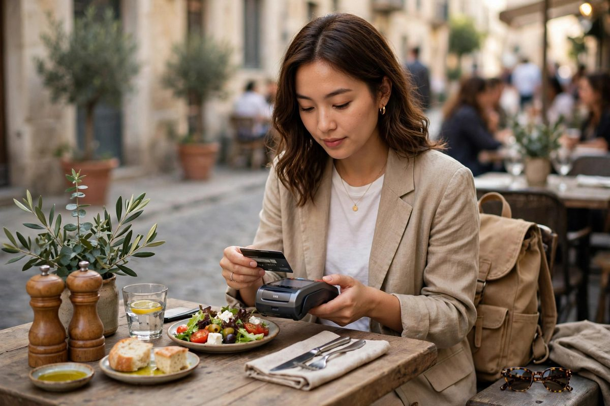

Travel Money Tips: How to Pay Abroad Without Wasting Money

Before you travel
Good travel money starts at home. Tell your bank you are travelling, so a sudden burst of foreign transactions does not trigger a fraud block. Check whether your cards charge a foreign transaction fee, typically one to three percent, and consider getting a fee-free travel card if yours charges one. A second card from a different network is worth carrying, since some countries favour Visa over Mastercard or the reverse, and a lost card leaves you stranded without a backup.
Research the local currency situation before you go. Some countries are almost cashless, while others, especially in parts of Asia, Africa, and Latin America, still run on cash for markets, taxis, and small restaurants. Find out whether ATMs are common where you are going and whether your bank has partner banks that waive ATM fees. A little research prevents the common mistake of arriving with the wrong money or none at all.
Cash, card or both
For most trips, the best mix is a fee-free card for hotels, restaurants, and shops, plus a modest amount of local cash for taxis, tips, and markets. Withdraw cash from an ATM at the airport or in town rather than exchanging at a bureau, and withdraw larger amounts less often to reduce fixed ATM fees, while keeping the cash secure. Avoid carrying large sums: split cash between your wallet and your luggage, and keep emergency money separate from your daily spending.
Prepaid travel cards can help with budgeting, since you load a fixed amount and cannot overspend, but they often carry worse exchange rates and fees for reloading or withdrawing. A multi-currency account on your phone usually beats a prepaid card on both rate and flexibility, and it lets you hold several currencies at once. Whichever you choose, read the fee schedule before you travel, not after the charges appear.
Avoiding fees and scams
Always choose to pay in the local currency when a card terminal offers a choice, because the alternative, dynamic currency conversion, uses a poor rate and adds a margin. Avoid ATMs that are not attached to a bank, since independent ATMs often charge higher fees and add their own conversion. Cover the keypad when entering your PIN, and be wary of anyone offering to exchange money on the street, however good the rate sounds.
Keep receipts and check your statements during the trip, not just after it. A duplicate charge or a wrong amount is far easier to dispute while you are still in the country and can visit the merchant. Set up transaction alerts on your banking app so every payment notifies you immediately. With these habits, travel money becomes a small part of the trip rather than an expensive lesson.
Putting It Into Practice
For your next trip, make a one-page money plan before you go: which cards you will take, whether they charge foreign fees, how much cash you will withdraw on arrival, and where the nearest bank ATMs are to your hotel. Tell your bank you are travelling, set up transaction alerts, and keep a backup card separate from your wallet. A plan that takes twenty minutes to write prevents the common travel money problems, from blocked cards to expensive bureau exchanges, and lets you enjoy the trip instead of worrying about money.
Frequently Asked Questions
How much cash should I take on holiday?
Enough for a day or two of small expenses, plus an emergency reserve. Use a fee-free card for most spending and ATMs for top-ups.
Should I tell my bank I am travelling?
Yes. It reduces the chance of your card being blocked for suspected fraud when foreign transactions appear.
Are prepaid travel cards worth it?
They help with budgeting but often have worse rates and fees than a multi-currency account or a fee-free card.